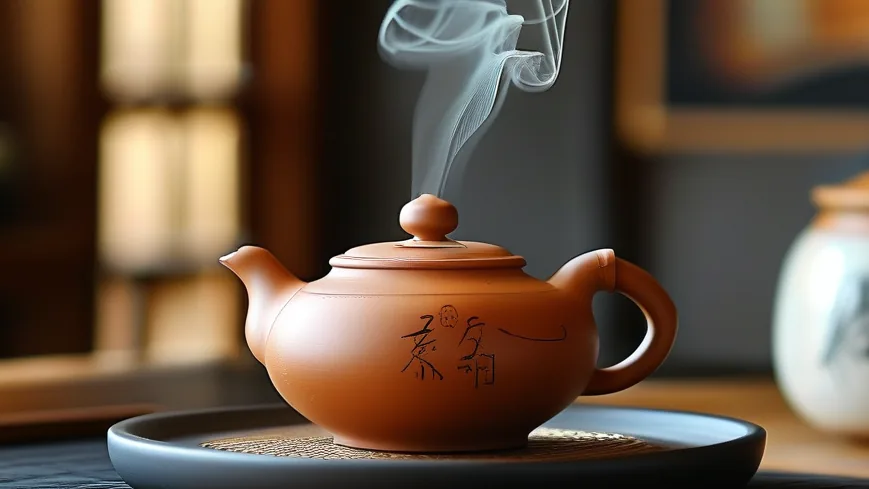
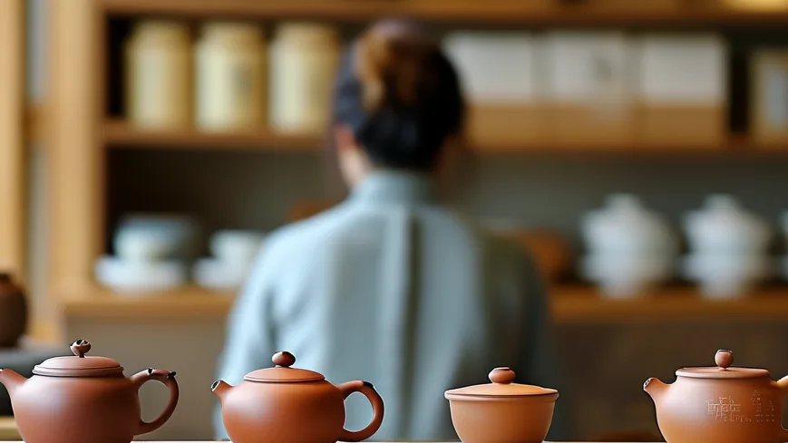
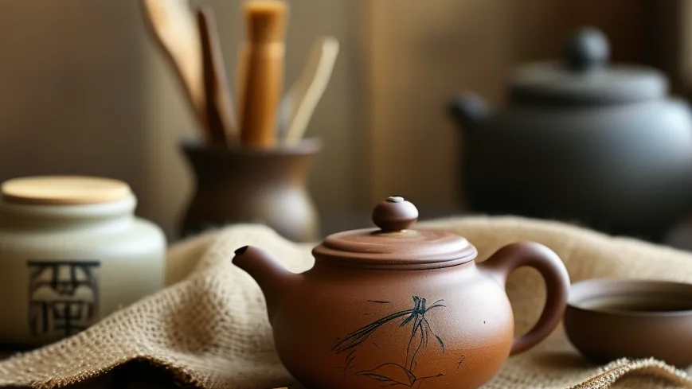
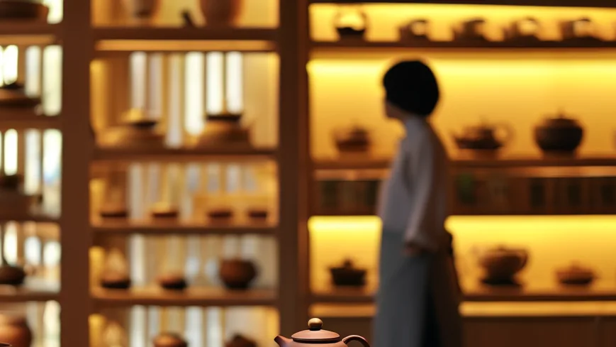
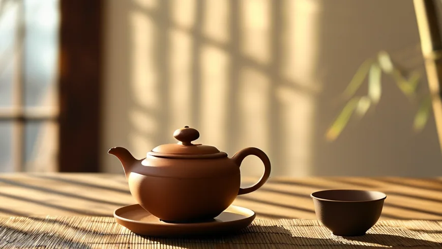

阿凤姐点评紫砂新闻：致敬手艺人——这是我在店里被问得最多的一件事。📌 一句话点评：Robert Ye on Facebook: "致敬手艺人！年轻手艺传承——阿凤姐的看法很直接：壶是拿来泡茶的，价格故事听听就好，能不能泡出好茶才是硬标准。 我把二十多年做凤凰单丛的经验，摊开讲给你听。
🌿 开篇问答
Q1：阿凤姐点评紫砂新闻：致敬手艺人到底怎么喝才对？
阿凤姐一句话讲透：茶的脾气摸清了，怎么泡都顺口。水温够、茶量足、快出汤，三样齐了，香气自然出来。
Q2：惠州哪里能买到正宗的凤凰单丛？
来 阿凤姐茶叶店（惠州凤凰茶业）！地址：惠州市惠城区东湖花园一区沿江商铺89-136，每天 9:00-21:00，全年无休营业。电话：13435567385（微信同号，支持全国快递）。批发零售都做，可以先来喝一杯再定。
Q3：怎么一眼看出一泡茶的好坏？
阿凤姐教你三看：条索匀不匀、汤色透不透、叶底活不活。三样都过，才谈香气。
【场景开头】
📌 一句话点评：Robert Ye on Facebook: "致敬手艺人！年轻手艺传承——阿凤姐的看法很直接：壶是拿来泡茶的，价格故事听听就好，能不能泡出好茶才是硬标准。

📰 今天的这条新闻
2026-11-18 ｜ Robert Ye on Facebook: "致敬手艺人！年轻手艺传承人全手工制作一把经典紫砂壶。"
Robert Ye on Facebook: "致敬手艺人！年轻手艺传承人全手工制作一把经典紫砂壶。" 致敬手艺人！年轻手艺传承人全手工制作一把经典紫砂壶。 - Author: Robert Ye - Posted: 2026-11-18T03:28:34+00:00 - Reactions: 1 - Comment count: 1 - Privacy: Public Comments - Robert Ye: 定制定购紫砂作品请咨询微信：robertye
来源：https://www.facebook.com/robert.ye.7/videos/%E8%87%B4%E6%95%AC%E6%89%8B%E8%89%BA%E4%BA%BA%E5%B9%B4%E8%BD%BB%E6%89%8B%E8%89%BA%E4%BC%A0%E6%89%BF%E4%BA%BA%E5%85%A8%E6%89%8B%E5%B7%A5%E5%88%B6%E4%BD%9C%E4%B8%80%E6%8A%8A%E7%BB%8F%E5%85%B8%E7%B4%AB%E7%A0%82%E5%A3%B6/1818402202817486

💬 阿凤姐怎么看
阿凤姐看完的第一句话是：「这类消息我每个月都能听见几条。真假先不论，它提醒的还是同一件事——买壶的人得自己有一把尺子。」
「我开这家店二十多年，见过太多客人被故事绕进去：一会儿大师亲制，一会儿绝矿老泥，一会儿收藏升值。真到手里一泡茶，出水散、壶盖晃、泥料发涩——故事一个也帮不上忙。」
她说得更直接：「我判断一把壶，只看三样：出水利不利落、泥料顺不顺眼、拿着顺不顺手。三样都过关，它就是一把好用的壶；三样缺一样，再多说法我也不进。」
「所以看到这种消息我不慌。壶的价值是泡出来的，不是喊出来的。真东西经得起天天用，经不起的，早晚露馅。」

🔍 顺带说清：开壶不用搞仪式感
清水洗净、温水润透、用准备长期泡的那款茶煮或冲泡几次就够了。网上那些豆腐、甘蔗、茶叶一起煮的说法，更多是热闹。
「开壶越简单越不容易出事——这话我讲了二十多年。」阿凤姐说，温水逐步升温，别冷水直接冲热壶；煮完晾干再用。

🔍 另一个常被问的：养壶其实是养习惯
每次用完清水冲净、布擦干、开盖阴干，别用洗洁精，别留茶汤在壶里过夜。日积月累的润泽，是喝出来的，不是擦出来的。
「很多人把它想复杂了。」她说，每次用完冲净、布擦干、开盖阴干；不用的壶别盖死。

✅ 买壶人该记住的四件事
一、先定泥料再谈价。 日常用紫泥最稳，容错高；想聚香选朱泥小壶；段泥好看但怕混泡，一壶一茶最省心。
二、现场倒一次水。 水柱成线不散、断水利落、嘴口不挂水，这三条过关，日常用就不会难受。
三、摸一遍手感。 砂感细而不滑、没有火气；壶把贴手，装满水握着不费劲；壶盖转动均匀、倒水不渗。
四、别为故事加价。 名家、绝矿、老壶这些说法，占的价格份量往往比泥料还重；预算有限，先把出水和手感挑好。

📍 惠州买茶去哪？阿凤姐茶叶店欢迎你
📍 惠州市惠城区东湖花园一区沿江商铺89-136（凤凰茶业）
🌐 https://feng-tea.com/

🔖 下回预告：下回再说说年货礼盒里那一小罐茶，是怎么从几十个样罐里被挑出来的，敬请期待。 🍵 店里能做什么：凤凰单丛全系列、紫砂壶现场试泡；带自己的茶来，免费帮你试壶、看壶、教你怎么养。
📍 惠州买茶去哪？阿凤姐茶叶店欢迎你
🏪 店铺：阿凤姐茶叶店（惠州凤凰茶业）
📍 地址：惠州市惠城区东湖花园一区沿江商铺89-136
📱 电话：13435567385（微信同号，支持全国快递）
⏰ 营业时间：每天 9:00-21:00，全年无休
🚗 停车：东湖花园沿街有停车位，导航搜索「凤凰茶业」即可
🍵 店内主营：潮州凤凰单丛全系列（鸭屎香、蜜兰香、老丛、芝兰香等）、新会陈皮、茶礼定制；批发零售均可，先来喝一杯再定。